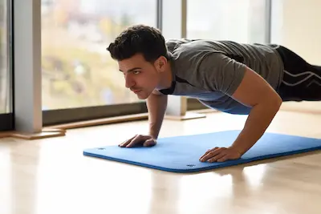

Rutina full-body en casa (sin equipos)
Introducción al Entrenamiento en Casa
El entrenamiento en casa ha ganado popularidad en los últimos años, especialmente para quienes no tienen tiempo o recursos para asistir a un gimnasio. Sin embargo, existe la creencia errónea de que para ganar músculo se necesitan máquinas o pesas costosas. La realidad es que el cuerpo puede ser un excelente instrumento de resistencia cuando se usan los ejercicios adecuados y se aplican principios de progresión. Esta rutina full-body está diseñada para estimular todos los grupos musculares principales mediante movimientos funcionales que no requieren más que el propio peso corporal y algunos objetos cotidianos que puedes encontrar en cualquier hogar.
Uno de los mayores beneficios del entrenamiento en casa es la flexibilidad que ofrece. No estás limitado por horarios de gimnasio ni tienes que esperar turno para usar equipos. Puedes adaptar la intensidad y duración según tu nivel de condición física actual, haciendo que sea perfecto tanto para principiantes como para personas más avanzadas. Además, al eliminar factores como el tiempo de traslado, es más fácil mantener la constancia, que es el verdadero secreto para obtener resultados a largo plazo. La clave está en entender que la efectividad no se mide por la cantidad de equipos que uses, sino por la calidad del estímulo que le das a tus músculos en cada sesión.
Ejercicios Clave y Técnica Correcta
La selección de ejercicios es fundamental para que una rutina sin equipos sea efectiva. Los movimientos multiarticulares, que trabajan varios grupos musculares simultáneamente, son la mejor opción para maximizar el tiempo y la eficiencia. Las sentadillas, por ejemplo, no solo trabajan cuádriceps y glúteos, sino que también involucran el core y los músculos estabilizadores de la espalda baja. Para ejecutarlas correctamente, es crucial mantener la espalda recta, bajar hasta que los muslos queden paralelos al suelo y asegurarse de que las rodillas no sobrepasen la punta de los pies. Una variación avanzada es la sentadilla pistol (a una pierna), que aumenta significativamente la dificultad y el estímulo muscular cuando el movimiento básico se vuelve demasiado fácil.
Los fondos en silla son otro ejercicio esencial en esta rutina, ya que trabajan tríceps, pecho y hombros de manera integral. Para realizarlos correctamente, coloca las manos en el borde de una silla resistente con los dedos apuntando hacia adelante, extiende las piernas y baja el cuerpo flexionando los codos hasta formar un ángulo de 90 grados. Es importante mantener los codos cerca del torso para enfatizar el trabajo en los tríceps y evitar sobrecargar las articulaciones de los hombros. Si este movimiento resulta demasiado difícil al principio, se puede modificar manteniendo las piernas flexionadas para reducir el peso corporal que hay que levantar.
Estructura Detallada de la Rutina
Esta rutina sigue un formato de circuito que combina ejercicios para la parte superior e inferior del cuerpo, alternando grupos musculares para permitir una recuperación parcial entre series sin necesidad de largos periodos de descanso. El calentamiento inicial debe incluir movilidad articular y activación muscular, como círculos de brazos, sentadillas sin peso y planchas dinámicas durante 3-5 minutos. Esto prepara el cuerpo para el trabajo intenso y reduce el riesgo de lesiones.
El circuito principal consiste en cuatro ejercicios realizados en secuencia: sentadillas (4 series de 15 repeticiones), fondos en silla (4 series de 12 repeticiones), planchas (3 series de 30-45 segundos) y zancadas alternadas (3 series de 10 repeticiones por pierna). Entre cada ejercicio se deben tomar 30 segundos de descanso activo, como caminar en el lugar o hacer movimientos suaves de estiramiento. La ventaja de este formato es que mantiene la frecuencia cardíaca elevada, lo que proporciona beneficios cardiovasculares adicionales mientras se trabaja la fuerza muscular. Para quienes disponen de más tiempo, se puede repetir el circuito completo 2-3 veces con 1-2 minutos de descanso entre vueltas.
Estrategias de Progresión y Adaptación
Uno de los mayores desafíos del entrenamiento con peso corporal es seguir progresando cuando los ejercicios básicos se vuelven demasiado fáciles. La solución está en aplicar principios de sobrecarga progresiva mediante variaciones más difíciles o el uso de resistencia adicional. Por ejemplo, las sentadillas pueden intensificarse realizándolas en una sola pierna (sentadilla pistol) o añadiendo peso mediante una mochila cargada con libros o botellas de agua. Para los fondos en silla, se puede aumentar la dificultad elevando los pies sobre otra silla o superficie estable, lo que incrementa el porcentaje de peso corporal que deben soportar los brazos.
Las planchas, aunque aparentemente simples, ofrecen múltiples variaciones para seguir desafiando al core. Se puede progresar desde la plancha tradicional hasta versiones más avanzadas como la plancha con levantamiento alternado de brazos y piernas, planchas laterales con rotación, o incluso planchas dinámicas donde se llevan las rodillas hacia los codos alternadamente. Para aquellos que buscan un estímulo adicional en las piernas, las zancadas pueden convertirse en zancadas con salto o zancadas caminando con carga (sosteniendo objetos pesados como garrafones de agua). La clave es escuchar al cuerpo y avanzar gradualmente, asegurándose de dominar cada variación antes de pasar a la siguiente.
Nutrición y Recuperación Complementaria
Aunque este artículo se centra en el entrenamiento, es importante mencionar que los resultados visibles dependen en gran medida de la nutrición y el descanso. Para apoyar el crecimiento muscular, se recomienda consumir suficiente proteína (al menos 1.6 gramos por kilo de peso corporal al día) distribuida en 3-4 comidas. Fuentes económicas y accesibles incluyen huevos, atún, pechuga de pollo, legumbres y quinoa. Los carbohidratos complejos (avena, arroz integral, batata) proporcionan la energía necesaria para entrenar con intensidad, mientras que las grasas saludables (aguacate, frutos secos, aceite de oliva) apoyan la producción hormonal.
La hidratación es otro factor crítico que a menudo se subestima. Beber suficiente agua (al menos 2-3 litros diarios) mejora el rendimiento durante el entrenamiento y acelera la recuperación posterior. En cuanto al descanso, aunque esta rutina puede realizarse 4-5 veces por semana, es esencial permitir al menos 48 horas de recuperación para los mismos grupos musculares. Dormir 7-9 horas por noche es igual de importante que el entrenamiento en sí, ya que durante el sueño profundo se liberan hormonas como la testosterona y la hormona del crecimiento, que son esenciales para la reparación y el crecimiento muscular.
Soluciones para Problemas Comunes
Muchas personas abandonan el entrenamiento en casa debido a la falta de motivación o la dificultad para medir el progreso. Para combatir esto, se recomienda llevar un diario de entrenamiento donde se registren las repeticiones, series y variaciones realizadas cada día. Ver el progreso escrito (como pasar de 10 a 15 sentadillas consecutivas o aumentar el tiempo en plancha de 30 a 60 segundos) puede ser enormemente motivador. Otra estrategia efectiva es grabarse periódicamente realizando los ejercicios para evaluar la mejora en la técnica y la forma física.
Para aquellos que se sienten solos entrenando en casa, buscar comunidades en línea o apps de fitness puede proporcionar el apoyo social necesario. Muchas plataformas ofrecen retos mensuales específicos para entrenamiento en casa, lo que añade un elemento de competencia saludable y estructura al proceso. Finalmente, es importante recordar que los resultados toman tiempo: cambios visibles en la composición corporal pueden tardar 8-12 semanas de entrenamiento consistente, pero las mejoras en fuerza y resistencia suelen notarse mucho antes, lo que sirve como indicador de que el proceso está funcionando.